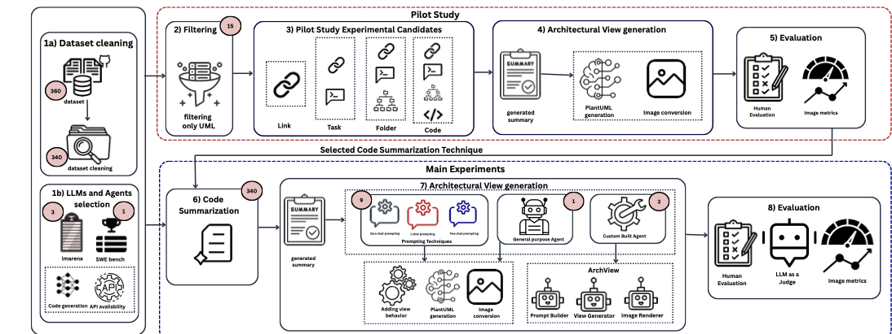
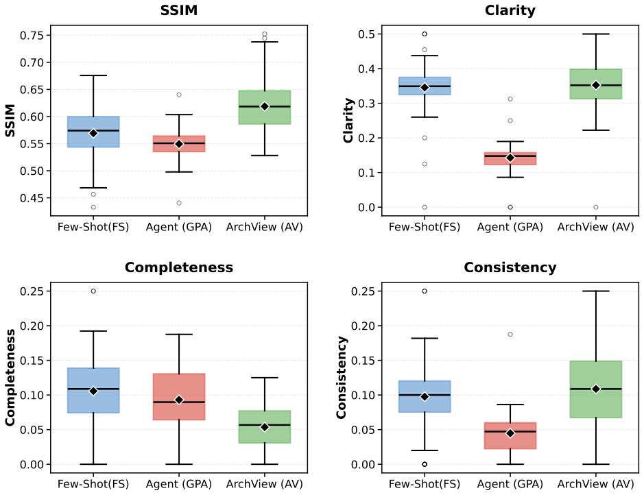
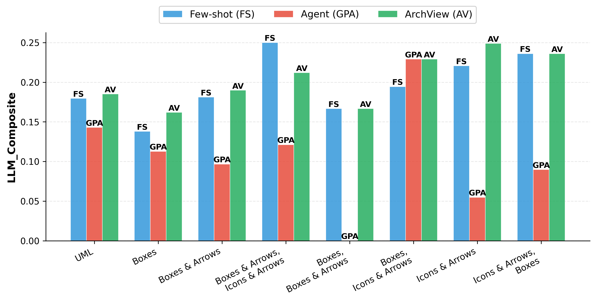
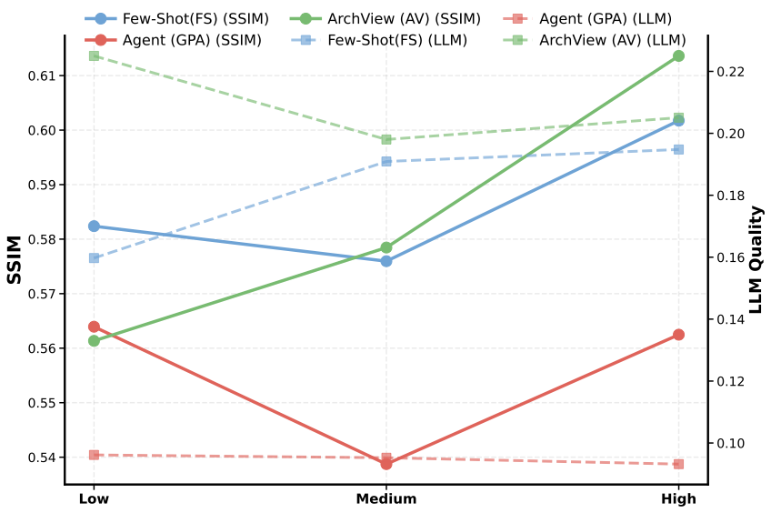
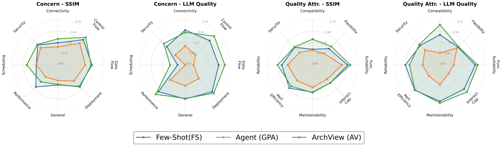
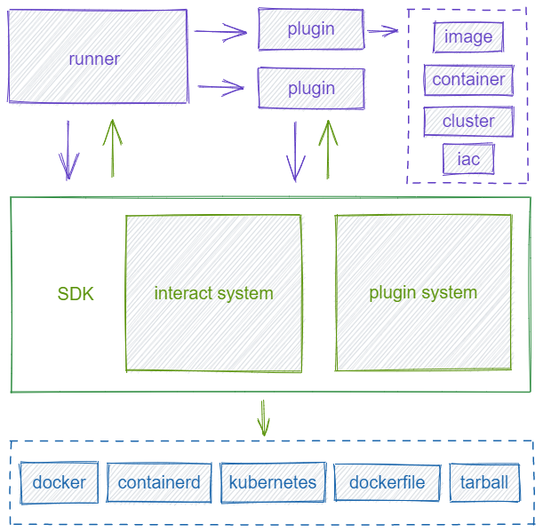
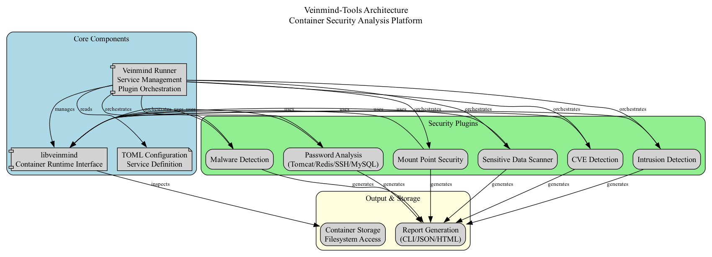
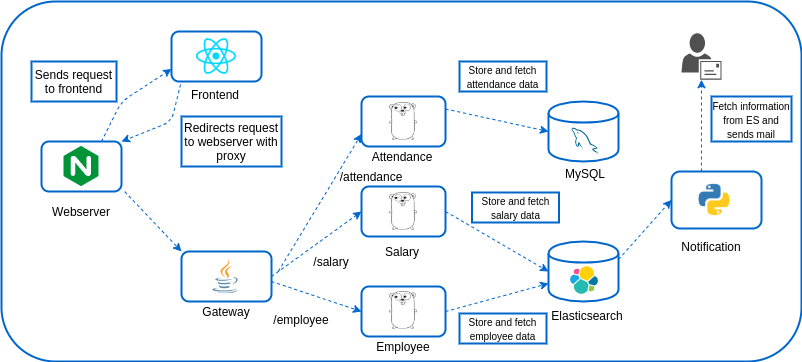
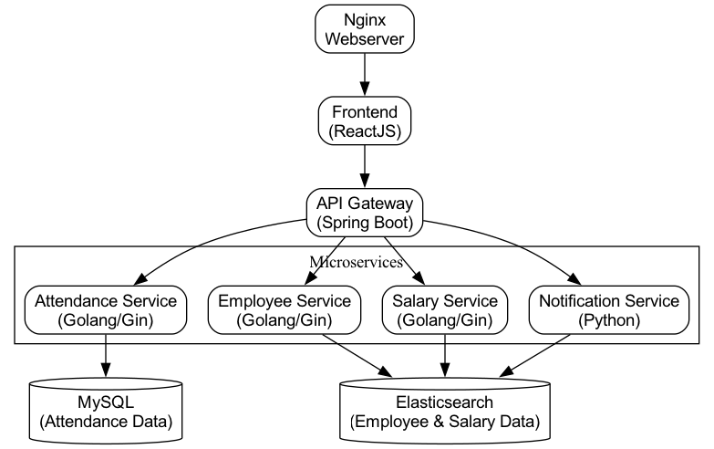

How do prompting and agentic strategies compare?
The paper benchmarks zero-shot, one-shot, few-shot, a general-purpose agent, and the custom ArchView agent.
A large-scale empirical study of prompting and agentic approaches for generating software architecture views from source code across 340 open-source repositories and 4,137 generated views.
Abstract
Architecture views are central to software architecture documentation, but their manual creation is expensive and they quickly become outdated. This paper evaluates whether LLMs and agentic approaches can generate architecture views directly from source code.
Across 340 repositories, 3 LLMs, 3 prompting strategies, and 2 agentic settings, the study finds that LLMs can generate syntactically valid diagrams, yet they still struggle with completeness, consistency, and architectural granularity. Prompting yields only marginal gains, while a custom architecture-aware agent, ArchView, delivers the best overall performance.
Few-shot prompting with Claude-3.5 Sonnet reduced clarity failures to 30.8%, improving over zero-shot baselines but still leaving large semantic gaps.
ArchView with Claude-3.5 Sonnet achieved the strongest clarity result at 22.6% failure rate and the best human level-of-detail success at 50.0%.
General-purpose coding agents do not transfer cleanly to architectural modeling: Claude Code produced the weakest results across the evaluated settings.
Study Design
The paper benchmarks zero-shot, one-shot, few-shot, a general-purpose agent, and the custom ArchView agent.
The study tests whether richer notations and abstraction levels change structural or semantic generation quality.
The analysis compares performance across view concerns such as control flow, deployment, and general documentation.

Main Results
Automated evaluation focuses on Clarity, Completeness, and Consistency.
Blinded human assessment captures Accuracy and Level of Detail, where ArchView aligns best with the intended abstraction.
ArchView dominates clarity and consistency, while completeness remains a broader challenge across nearly all settings.

| Type | Approach | Candidate | Total | Clarity M | Clarity P | Clarity N | Completeness M | Completeness P | Completeness N | Consistency M | Consistency P | Consistency N | SSIM | Error |
|---|---|---|---|---|---|---|---|---|---|---|---|---|---|---|
| LLM | Zero-shot | DeepSeek-V2.5 | 320 | 0.3 | 50.4 | 49.3 | 0.3 | 17.0 | 82.7 | 0.3 | 10.4 | 89.3 | 0.56 | 20 |
| LLM | Zero-shot | GPT-4o | 324 | 0.6 | 52.5 | 46.9 | 0.3 | 11.4 | 88.3 | 0.3 | 11.7 | 88.0 | 0.58 | 16 |
| LLM | Zero-shot | Claude-3.5 Sonnet | 325 | 1.0 | 59.0 | 40.0 | 0.0 | 17.1 | 82.9 | 0.0 | 15.6 | 84.4 | 0.58 | 15 |
| LLM | One-shot | DeepSeek-V2.5 | 320 | 1.8 | 67.2 | 31.0 | 0.6 | 20.9 | 78.5 | 0.6 | 21.5 | 77.9 | 0.56 | 20 |
| LLM | One-shot | GPT-4o | 324 | 0.6 | 63.3 | 36.1 | 0.6 | 17.9 | 81.5 | 0.6 | 17.0 | 82.4 | 0.58 | 16 |
| LLM | One-shot | Claude-3.5 Sonnet | 310 | 1.3 | 57.1 | 41.6 | 0.6 | 18.4 | 81.0 | 0.3 | 11.6 | 88.1 | 0.58 | 30 |
| LLM | Few-shot | DeepSeek-V2.5 | 308 | 1.5 | 64.1 | 34.4 | 0.9 | 21.4 | 77.7 | 0.6 | 18.7 | 80.7 | 0.55 | 32 |
| LLM | Few-shot | GPT-4o | 312 | 2.2 | 64.4 | 33.3 | 1.6 | 17.6 | 80.8 | 0.6 | 22.8 | 76.6 | 0.57 | 28 |
| LLM | Few-shot | Claude-3.5 Sonnet | 299 | 1.0 | 68.2 | 30.8 | 0.0 | 26.4 | 73.6 | 0.0 | 17.7 | 82.3 | 0.59 | 41 |
| Agent | GPA | Claude Code | 324 | 0.6 | 27.6 | 71.8 | 0.9 | 16.3 | 82.8 | 0.0 | 9.8 | 90.2 | 0.55 | 16 |
| Agent | ArchView | DeepSeek-V2.5 | 322 | 1.2 | 59.3 | 39.4 | 0.3 | 11.5 | 88.2 | 0.3 | 21.4 | 78.3 | 0.64 | 18 |
| Agent | ArchView | GPT-4o | 324 | 1.5 | 65.6 | 32.8 | 0.0 | 14.6 | 85.4 | 0.0 | 18.9 | 81.1 | 0.62 | 16 |
| Agent | ArchView | Claude-3.5 Sonnet | 325 | 2.5 | 74.8 | 22.6 | 0.0 | 15.0 | 85.0 | 0.0 | 27.4 | 72.6 | 0.60 | 15 |



Expressive notations with icons and arrows provide better structural cues than plain boxes.
Control flow and data flow views show the strongest balance between structural similarity and semantic quality.
Functional suitability reaches the highest SSIM, while compatibility shows the highest semantic quality in the LLM-based analysis.
Qualitative Examples




Discussion
When repository summarization misses architectural intent, the generated view drifts regardless of the downstream model or prompting strategy.
Pixel similarity is not enough. Architecture-aware evaluation must reason about abstraction, stakeholder comprehensibility, and concern coverage.
Real-world architecture documentation is often semi-formal. Supporting that gap more directly is critical for practical adoption.
Future work targets better repository-wide summarization, retrieval-augmented generation, multi-agent collaboration, and architecture-specific evaluation frameworks.
Citation
@inproceedings{miryala2026llmviews,
title = {LLM-based Automated Architecture View Generation: Where Are We Now?},
author = {Miryala, Sathvika and Dhar, Rudra and Vaidhyanathan, Karthik},
year = {2026},
booktitle = {Proceedings of the IEEE International Conference on Software Architecture (ICSA 2026)},
url = {.}
}